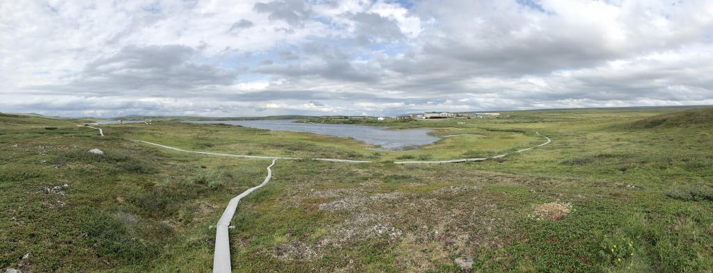

End Activity Session (Day 1)

The boardwalk at Toolik Field Station, Alaska. Arcus
This afternoon we ran the complete workflow together in sessions 1c and 1d. Today you will run the whole thing again on your own, changing a few things along the way to see what happens.
🎬 “Coming Attractions”
- Your job: copy the given code, run it, and make the one change each task asks for.
- Our job: show you what a workflow looks like before you learn how every piece works.
- The goal: get comfortable running and modifying a real analysis.
Don’t panic 🚀
You are not expected to understand every line today! You already used all of these tools this afternoon, though only at a shallow level, and over the next six days we will cover each one properly. If a cell refuses to run and you cannot work out why, grab Cella or Kelly and show them what you saw.
The data
You will use the same Arctic weather data from the Arctic LTER station at Toolik Lake, Alaska: daily measurements from 1988 onward. The file lives in our course repository, so you can load it straight from its URL.
When you’ll learn these skills
Everything in this workflow gets a full teaching day later in the course:
| What you use today | When you’ll learn it | Workflow step |
|---|---|---|
pd.read_csv(), .head(), .info() |
Day 2 | Import + Explore |
df[df['col'] > value], .sort_values() |
Day 3 | Filter + Sort |
.dropna(), new columns |
Day 4 | Clean + Transform |
df.groupby(...)['col'].mean() |
Day 5 | Group + Aggregate |
pd.merge(), pivot_table() |
Day 6 | Join + Reshape + Dates |
plt.plot(), plt.bar() |
Day 7 | Visualize |
Setup
Create a new notebook named
EOD_Day1_Workflow.ipynb.Add a title cell:
# Day 1 EOD: Rerun the Workflow
Date: 08/31/2026- Work through the rest of this page in your new notebook. Copy each code cell, run it, then write a short markdown note under it saying what you saw.
Rebuild the workflow
Rebuild the analysis from this afternoon’s sessions. Copy and run each cell.
1. Import and load
Copy and run this code:
import pandas as pd
import matplotlib.pyplot as plt
url = "https://eds-217-essential-python.github.io/data/toolik_weather.csv"
df = pd.read_csv(url)
R vs Python: loading data
In R you would write df <- read.csv(url). Python’s pd.read_csv(url) does the same job, reading a CSV straight from a URL into a DataFrame.
2. Look at the data
Copy and run this code:
df.head()
df.isnull().sum()The df.isnull().sum() line is the health check you met this afternoon. It counts missing values in each column. Daily_AirTemp_Mean_C has none, so the temperature analysis below needs no cleaning.
3. Monthly average temperature
Copy and run this code:
monthly = df.groupby('Month')
monthly_means = monthly['Daily_AirTemp_Mean_C'].mean()
monthly_means
R vs Python: grouping
In dplyr you would write df %>% group_by(Month) %>% summarize(mean(...)), and grouping in pandas does the same job. The two-step form df.groupby('Month') then ['col'].mean() splits the rows into monthly groups and averages one column within each.
4. Plot it
Copy and run this code:
plt.plot(monthly_means)
plt.title("Toolik Monthly Temperatures")
plt.xlabel("Month")
plt.ylabel("Temperature (°C)")
plt.show()
R vs Python: plotting
In R you might draw this with ggplot(...) + geom_line(). Here plt.plot(series) takes your twelve monthly values and draws them in order, and the label lines set the title and axes.
You now have df, monthly, and monthly_means in your notebook, which is exactly where we ended up this afternoon. Each of the three tasks below makes one change to this workflow.
🔁 Task 1: monthly means for a different variable
The rebuild averaged Daily_AirTemp_Mean_C. Keep the same grouping and average a different column instead.
What you wrote in the rebuild:
monthly_means = monthly['Daily_AirTemp_Mean_C'].mean()Your change: swap the column for one from this menu, and store the result in a new variable so monthly_means stays put:
Daily_globalrad_total_jcm2(daily global radiation)Daily_Precip_Total_mm(daily precipitation)Daily_windsp_mean_msec(daily mean wind speed)
For example, monthly_radiation = monthly['Daily_globalrad_total_jcm2'].mean(). The new line reads monthly, which was built from df, so it leaves both df and your monthly_means unchanged.
✍️ Required: say it in a sentence
Read one month’s value from your new result and report it in an f-string. For example, after reading June’s value:
june_radiation = 2041.9 # June's value, read from your output
print(f"At Toolik, June's average daily global radiation was {june_radiation} J/cm2.")🔁 Task 2: yearly means
The rebuild grouped by Month. Now change the grouping key to Year to see the year-by-year trend across the whole record.
What you wrote in the rebuild:
monthly = df.groupby('Month')
monthly_means = monthly['Daily_AirTemp_Mean_C'].mean()Your change: group by a different key. Build a new grouping and average the same temperature column into new variables:
by_year = df.groupby('Year')
yearly_means = by_year['Daily_AirTemp_Mean_C'].mean()
yearly_meansThe new grouping reads df without changing it, and it leaves monthly and monthly_means alone.
✍️ Required: say it in a sentence
Read one year’s value from yearly_means and report it in an f-string. For example, after reading the value for the year 2000:
temp_2000 = -8.97 # the year 2000 value, read from your output
print(f"In 2000, Toolik's average temperature was {temp_2000} degrees Celsius.")🔁 Task 3: a labeled bar chart
Draw the monthly temperatures as a bar chart with month-name labels, then change the title.
Copy and run this code:
months = ['Jan', 'Feb', 'Mar', 'Apr', 'May', 'Jun', 'Jul', 'Aug', 'Sep', 'Oct', 'Nov', 'Dec']
plt.bar(months, monthly_means)
plt.title("Toolik Monthly Temperatures")
plt.xlabel("Month")
plt.ylabel("Temperature (°C)")
plt.show()
Note
The month names line up with the bars only because monthly_means is in calendar order, from month 1 to month 12. plt.bar pairs the first name with the first bar, the second name with the second bar, and so on down the list. If you ever re-sorted monthly_means, for example by value, the names would no longer match the bars, so keep your data in month order whenever you use a fixed label list like this one.
Your change: give the chart a new title. Pick one and re-run:
plt.title("Average Temperature by Month at Toolik")plt.title("Arctic Seasonality, Toolik Lake")plt.title("Monthly Mean Air Temperature, 1988 to 2018")
✍️ Required: say it in a sentence
Read the coldest month’s value off your chart and report it in an f-string. For example, after reading January’s value:
coldest = -22.89 # January's value, read from your chart
print(f"Toolik's coldest month averages about {coldest} degrees Celsius.")Wrap-up
Nice work! You reran a complete data science workflow and changed three things in it: the variable you averaged, the grouping key, and a chart label. Each time, you reported a result in your own words with an f-string. The workflow you just reran is the plan for the whole course in miniature, and starting Day 2 we will cover how each step works, roughly one step per day.